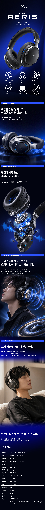

01. CONCEPT 컨셉 설정
프리미엄 사운드 경험을 시각화하다
블랙과 울트라마린 컬러를 중심으로 세련되고 몰입감 있는 헤드셋 브랜드 이미지를 구성했습니다.
02. HERO 제품 강조
첫 화면에서 제품의 인상을 명확하게
헤드셋을 크게 배치하고 강한 명암 대비를 활용해 제품의 디자인과 브랜드 아이덴티티가 먼저 보이도록 설계했습니다.
03. FEATURES 핵심 기능
복잡한 성능을 쉽고 빠르게
노이즈 캔슬링, 드라이버, 블루투스 등 주요 성능을 아이콘과 간결한 정보 구조로 표현했습니다.
04. DETAIL 기능 전달
기능을 이미지와 함께 직관적으로
사운드, 노이즈 캔슬링, 착용감 등 핵심 기능별로 이미지와 설명을 구성해 제품의 장점을 자연스럽게 이해할 수 있도록 했습니다.
05. VISUAL FLOW 화면 흐름
정보의 우선순위를 고려한 구성
제품 소개에서 핵심 기능, 세부 성능으로 이어지는 흐름을 통해 사용자가 필요한 정보를 순차적으로 확인할 수 있도록 구성했습니다.
06. FINAL 디자인 방향
제품의 가치가 기억되는 상세페이지
미래지향적인 비주얼과 일관된 디자인 시스템을 적용해 VELORA N1만의 프리미엄 이미지를 완성했습니다.
